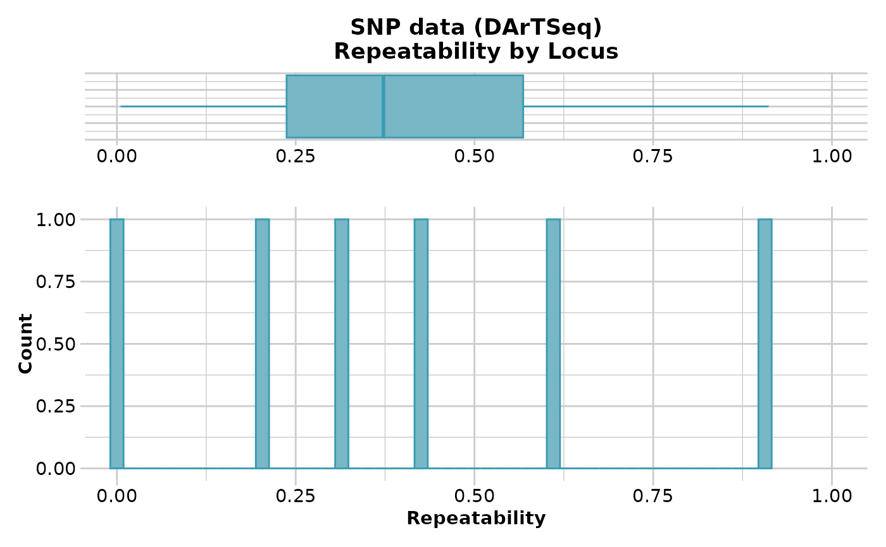

Example data set as text file to be imported into a genlight object
platy.RdCheck ?read.genetable in pacakge PopGenReport for details on the format.
Author
Bernd Gruber (bugs? Post to https://groups.google.com/d/forum/dartr
Examples
# \donttest{
library(PopGenReport)
#> Loading required package: knitr
read.csv( paste(.libPaths()[1],'/dartR/extdata/platy.csv',sep='' ))
#> ind pop lat long group age loci1 loci2 loci3 loci4 loci5
#> 1 T158 Black -40.86642 145.2836 Female juv A/A G/C A/T A/A G/C
#> 2 T306 Black -40.85589 145.2764 Male Ad A/A G/G A/A A/A G/C
#> 3 T305 Black -40.87889 145.2885 Female Ad A/A G/G A/T A/A G/C
#> 4 T148 Black -40.99193 145.3757 Male Ad A/A G/G A/A A/A G/C
#> 5 T149 Black -40.99193 145.3757 Female Ad A/A G/C A/T A/A G/C
#> 6 T106 Brid -41.23205 147.4597 Male Ad A/A G/G A/A A/A G/G
#> 7 T107 Brid -41.23205 147.4597 Male Ad A/A G/G A/T A/A G/G
#> 8 T110 Brid -41.23205 147.4597 Female Ad A/A G/G A/A A/A G/G
#> 9 T111 Brid -41.23205 147.4597 Female Ad A/T G/C A/T A/A G/G
#> 10 T308 Cam -41.09567 145.7958 Male Sub-Ad A/T C/C A/A A/A G/G
#> 11 T307 Cam -41.06975 145.8152 Male Ad A/T C/C A/T A/A C/C
#> 12 T302 Cam -41.05121 145.8280 Male Ad T/T G/C A/A A/A C/C
#> 13 T303 Cam -41.04764 145.8230 Female Juv T/T C/C A/T A/A C/C
#> loci6
#> 1 T/A
#> 2 T/A
#> 3 T/A
#> 4 T/A
#> 5 T/A
#> 6 T/A
#> 7 T/A
#> 8 T/A
#> 9 T/A
#> 10 T/A
#> 11 T/A
#> 12 T/T
#> 13 A/A
platy <- read.genetable( paste(.libPaths()[1],'/dartR/extdata/platy.csv',
sep='' ), ind=1, pop=2, lat=3, long=4, other.min=5, other.max=6,
oneColPerAll=FALSE, sep='/')
platy.gl <- gi2gl(platy, parallel=FALSE)
#> Starting gi2gl
#> Starting gl.compliance.check
#> Processing genlight object with SNP data
#> Checking coding of SNPs
#> SNP data scored NA, 0, 1 or 2 confirmed
#> Checking locus metrics and flags
#> Recalculating locus metrics
#> Checking for monomorphic loci
#> Dataset contains monomorphic loci
#> Checking for loci with all missing data
#> No loci with all missing data detected
#> Checking whether individual names are unique.
#> Checking for individual metrics
#> Warning: Creating a slot for individual metrics
#> Checking for population assignments
#> Population assignments confirmed
#> Spelling of coordinates checked and changed if necessary to
#> lat/lon
#> Completed: gl.compliance.check
#> Completed: gi2gl
#>
df.loc <- data.frame(RepAvg = runif(nLoc(platy.gl)), CallRate = 1)
platy.gl@other$loc.metrics <- df.loc
gl.report.reproducibility(platy.gl)
#> Starting gl.report.reproducibility
#> Processing genlight object with SNP data
#> Reporting Repeatability by Locus
#> No. of loci = 6
#> No. of individuals = 13
#> Minimum : 0.1381401
#> 1st quartile : 0.2260501
#> Median : 0.2900231
#> Mean : 0.3334087
#> 3r quartile : 0.4286523
#> Maximum : 0.6026781
#> Missing Rate Overall: 0
#>

#> Quantile Threshold Retained Percent Filtered Percent
#> 1 100% 0.6026781 1 16.7 5 83.3
#> 2 95% 0.6026781 1 16.7 5 83.3
#> 3 90% 0.6026781 1 16.7 5 83.3
#> 4 85% 0.6026781 1 16.7 5 83.3
#> 5 80% 0.4543574 2 33.3 4 66.7
#> 6 75% 0.4543574 2 33.3 4 66.7
#> 7 70% 0.4543574 2 33.3 4 66.7
#> 8 65% 0.3515371 3 50.0 3 50.0
#> 9 60% 0.3515371 3 50.0 3 50.0
#> 10 55% 0.3515371 3 50.0 3 50.0
#> 11 50% 0.2285092 4 66.7 2 33.3
#> 12 45% 0.2285092 4 66.7 2 33.3
#> 13 40% 0.2285092 4 66.7 2 33.3
#> 14 35% 0.2285092 4 66.7 2 33.3
#> 15 30% 0.2252304 5 83.3 1 16.7
#> 16 25% 0.2252304 5 83.3 1 16.7
#> 17 20% 0.2252304 5 83.3 1 16.7
#> 18 15% 0.1381401 6 100.0 0 0.0
#> 19 10% 0.1381401 6 100.0 0 0.0
#> 20 5% 0.1381401 6 100.0 0 0.0
#> 21 0% 0.1381401 6 100.0 0 0.0
#> Completed: gl.report.reproducibility
#>
# }